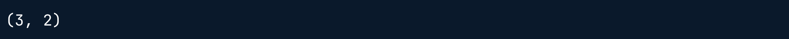
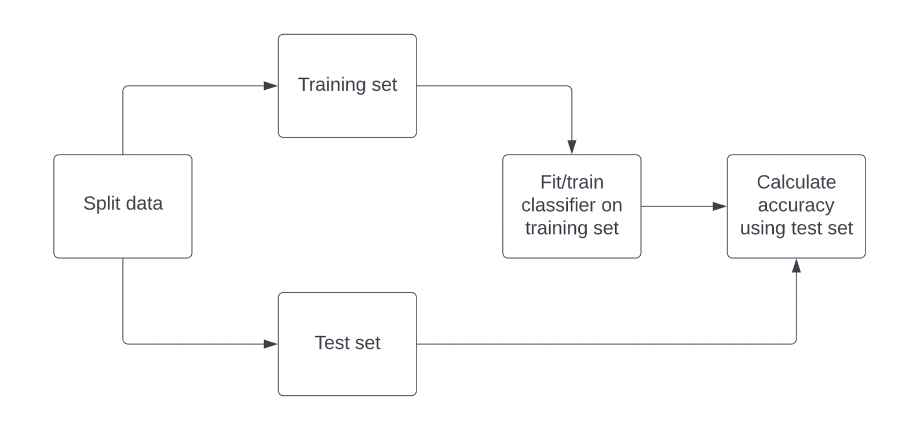
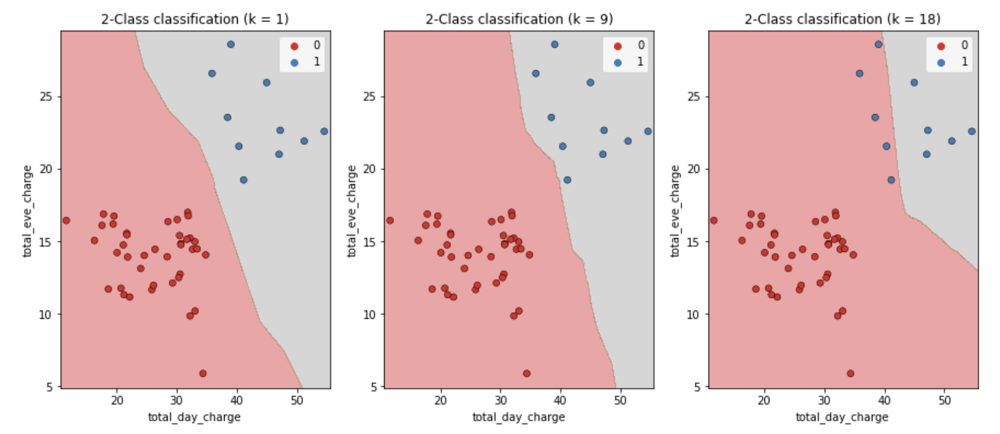
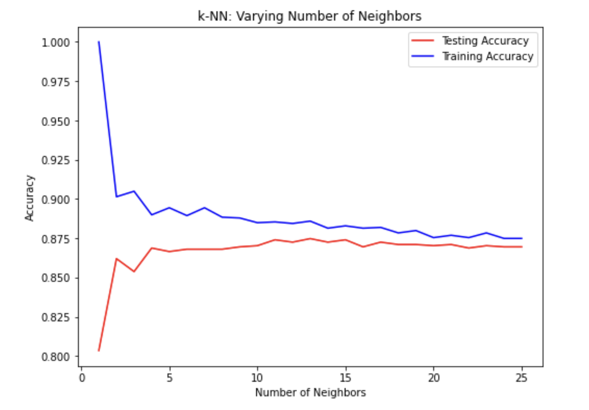

from sklearn.module import Model
model = Model()
model.fit(X, y)
predictions = model.predict(X_new)
print(predictions)Clasificación
En este capítulo, se te presentarán los problemas de clasifiación y aprenderás a resolverlos mediante técnicas de aprendizaje supervisado. Aprenderás a dividir los datos en conjuntos de entrenamiento y de prueba, ajustar un modelo, hacer predicciones y evaluar la precisión. Descubrirás la relación entre la complejidad del modelo y el rendimiento, aplicando lo que aprendas a un conjunto de datos de rotación, donde clasificarás el estado de rotación de los clientes de una empresa de telecomunicaciones.
Machine learning con scikit-learn
¿Qué es el machine learning?
- Es el proceso mediante el cual:
- Se da a los ordenadores la capacidad de aprender a tomar decisiones a partir de datos.
- ¡Sin haber sido programados explícitamente!
- Es el proceso mediante el cual:
Ejemplos de machine learning
- Clasificación de correos de spam o no en relación al contenido y su remitente.
- Agrupar libros por categorías en función de las palabras que contiene.
Aprendizaje no supervisado
- Descubrir patrones ocultos a partir de datos no etiquetados.
- Ejemplo
Agrupar a los clientes en categorías distintas (agrupación en clústeres)

Aprendizaje supervisado
Los valores previstos son conocidos.
Objetivo: predecir los valores objetivo de los datos no vistos, dadas las características.

Tipos de aprendizaje supervisado
Clasificación: La variable objetivo consta de categorías.
Ejemplo: Predecir si una transferencia bancaria es fraudulenta o no.
Regresión: La variable objetivo es continua.
Ejemplo: Un modelo puede utilizar características como el número de habitaciones y el tamaño de una propiedad para predecir el precio de la propiedad.
Convenciones de denominación
Característica = variable predictora = variable independiente
Variable objetivo = variable dependiente = variable de respuesta
Antes de utilizar el aprendizaje supervisado
- Requisitos:
- Que no falten valores.
- Que los datos esten en formato numérico.
- Que los datos esten almacenados en un DataFrame de pandas o en una matriz de Numpy.
- Hay que realizar primero un análisis exploratorio de datos (AED)
- Requisitos:
Sintaxis de scikit-learn
- Scikit-learn sigue la misma sintaxis para todos los modelos de aprendizaje supervisado lo que hace que el flujo de trabajo sea reproducible.

Clasificación binaria
Hay dos tipos de aprendizaje supervisado: clasificación y regresión. La clasificación binaria se utiliza para predecir una variable objetivo que solo tiene dos etiquetas, normalmente representados numéricamente con un cero o un uno.
A continuación se muestra la página .head() de un conjunto de datos churn_df. Puedes esperar que el resto de los datos contengan valores similares.

Observando estos datos, ¿Qué columna podría ser la variable objetivo de la clasificación binaria?
Respuestas posibles
churn tiene valores de 0 y 1, por lo que se puede predecir utilizando un modelo de clasificación binaria.
El flujo de trabajo del aprendizaje supervisado
Recuerda que sckikit-learn ofrece un flujo de trabajo repetible para utilizar modelos de aprendizaje supervisado con el fin de predecir los valores de la variable objetivo cuando se presentan nuevos datos.
Reordena el pseudocódigo proporcionado para que represente con precisión el flujo de trabajo de construir un modelo de aprendizaje supervisado y hacer predicciones.
Instrucciones
Arrastra los bloques de código en el orden correcto para representar cómo se ejecutaría el flujo de trabajo de aprendizaje supervisado.

Puedes ver cómo scikit-learn permite hacer predicciones ¡con solo unas pocas líneas de código!
El reto de la clasificación
- Clasificar etiquetas de datos no vistos
Se construye un modelo.
El modelo aprende de los datos etiquetados que le pasamos.
Le pasamos datos no etiquetados al modelo como entrada.
El modelo predice las etiquetas de los datos no vistos.
- Datos etiquetados = datos de entrenamiento
- K vecinos más cercanos (KNN)
- Predecir la etiqueta de un punto de datos:
- Observando los
kpuntos de datos etiquetados más cercanos. - Utilizando el voto por mayoría.
- Observando los
- Predecir la etiqueta de un punto de datos:
| si k = 3 | si k = 5 |
 |
 |
| Se clasificaría como roja | Se clasificaría como azul |
Intuición KNN
Se muestra un gráfico de dispersión que muestra la tarifa nocturna total frente a la tarifa diaria total de los clientes de una empresa de telecomunicaciones. Azul representa a los clientes que se han dado de baja y los de rojo a los que no.


KNN crea un límite de decisión para predecir si los clientes se darán de baja. Se prevee que los clientes en la franja con fondo gris, se darán de baja.
Utilizar scikit-learn para ajustar un clasificador
from sklearn.neighbors import KNeighborsClassifier X = churn_df[["total_day_charge", "total_eve_charge"]].values y = churn_df["churn"].values print(X.shape, y.shape)
knn = KNeighborsClassifier(n_neighbors=15) knn.fit(X, y)Predecir con datos no etiquetados
X_new = np.array([[56.8, 17.5],
[24.4, 24.1],
[50.1, 10.9]])
print(X_new.shape)
predictions = knn.predict(X_new)
print('Predictions: {}' .format(predictions))Ajustar KNN: k vecinos más cercanos
En este ejercicio, construirás tu primer modelo de clasificación utilizando el conjunto de datos churn_df, que se ha precargado para el resto del capítulo.
El objetivo, churn tiene que ser una sola columna con el mismo múmero de observaciones que los datos de las características. Los datos de las características ya se han convertido en matrices numpy.
“account_length” y “costumer_service_calls” se tratan como características porque la duración de la cuenta indica fidelidad del cliente, las llamadas frecuentes al servicio de atención al cliente pueden ser señal de insatisfacción y ambas pueden ser buenos predictores de la rotación.
Instrucciones
- Importa
KNeighborsClassifierdesdesklearn.neighbors. - Instncia un
KNeighborsClassifierllamadoknncon6vecinos. - Ajusta el clasificador a los datos utilizando el método
.fit().
import pandas as pd
ruta = './data/churn_df.csv'
churn_df = pd.read_csv(ruta)
churn_df.head()| account_length | total_day_charge | total_eve_charge | total_night_charge | total_intl_charge | customer_service_calls | churn | |
|---|---|---|---|---|---|---|---|
| 0 | 101 | 45.85 | 17.65 | 9.64 | 1.22 | 3 | 1 |
| 1 | 73 | 22.30 | 9.05 | 9.98 | 2.75 | 2 | 0 |
| 2 | 86 | 24.62 | 17.53 | 11.49 | 3.13 | 4 | 0 |
| 3 | 59 | 34.73 | 21.02 | 9.66 | 3.24 | 1 | 0 |
| 4 | 129 | 27.42 | 18.75 | 10.11 | 2.59 | 1 | 0 |
# Import KNeigborsClassifier
from sklearn.neighbors import KNeighborsClassifier
y = churn_df['churn'].values
X = churn_df[['account_length', 'customer_service_calls']].values
# Create a KNN classifier with 6 neighbors
knn = KNeighborsClassifier(n_neighbors=6)
# Fit the classifier to the data
knn.fit(X, y)KNeighborsClassifier(n_neighbors=6)In a Jupyter environment, please rerun this cell to show the HTML representation or trust the notebook.
On GitHub, the HTML representation is unable to render, please try loading this page with nbviewer.org.
Parameters
¡Excelente! Ahora que tu clasificador KNN ha sido ajustado a los datos, puede ser utilizado para predecir las etiquetas de nuevos puntos de datos.
Predecir KNN: k vecinos más cercanos
Ahora que has ajustado tu clasificador KNN, puedes utilizarlo para predecir la etiqueta de nuevos puntos de datos. Para el entrenamiento se utilizaron todos los datos disponibles, pero, afortunadamente, hay nuevas observaciones disponibles. Se han precargado como X_new.
import numpy as np
X_new = np.array([[30.0, 17.5],
[107.0, 24.1],
[213.0, 10.9]])Instrucciones
Crea
y_predprediciendo los valores objetivo de las características no vistasX_newutilizando el modeloknn.Imprime las etiquetas predichas para el conjunto de predicciones.
# Predict the labs for the X_new
y_pred = knn.predict(X_new)
# Print the predictions
print("Predictions: {}".format(y_pred))Predictions: [0 1 0]El modelo ha predicho que los primeros y terceros clientes no se darán de baja en el nuevo array. Pero, ¿cómo sabemos qué tan precisas son estas predicciones? Vamos a explorar cómo medir el rendimiento de un modelo en el próximo video.
Medir el rendimiento del modelo
Medir el rendimiento del modelo
En clasificación, se utiliza a menudo la métrica de la precisión.
Precisión: \[ \frac{\text{Predicciones correctas}}{\text{total de observaciones}} \]
¿Cómo medimos la precisión?
Podría calcular la precisión de los datos utilizados para ajustar el clasificador.
NO sería indicativo de la capacidad de generalización
Precisión del cálculo

Entrenamiento/prueba de la división
from sklearn.model_selection import train_test_split X_train, X_test, y_train, y_test = train_test_split(X, y, test_size=0.3, random_state=21, stratify=y) knn = KNeighborsClassifier(n_neighbors=6) knn.fit(X_train, y_train) print(knn.score(X_text, y_test))
Complejidad del modelo
k mayor = modelo menos complejo = puede provocar un ajuste insuficiente (underfitting)
k menor = modelo más complejo = puede llevar a un sobreajuste (overfitting)

Complejidad del modelo y sobreajuste o o ajuste insuficiente
train_accuracies = {} test_accuracies = {} neighbors = np.arange(1, 26) for neighbor in neighbors: knn = KNeighborsClassifier(n_neighbors=neighbor) knn.fit(X_train, y_train) train_accuracies[neighbor] = knn.score(X_train, y_train) test_accuracies[neighbor] = knn.score(X_test, y_test)Representación gráfica de nuestros resultados
plt.figure(figsize=(8, 6)) plt.title("KNN: Varying Number of Neighbors") plt.plot(neighbors, train_accuracies.values(), label="Training Accuracy") plt.plot(neighbors, test_accuracies.values(), label="Testing Accuracy") plt.legend() plt.xlabel("Number of Neighbors") plt.ylabel("Accuracy") plt.show()Curva de complejidad del modelo

División entrenamiento/prueba + cálculo de precisión
¡Es hora de practicar la división de tus datos en conjuntos de entrenamiento y de prueba con el conjunto de datos churn_df!
Instrucciones
- Importa
train_test_splitdesdesklear.model_selection. - Divide
Xyyen conjuntos de entrenamiento y de prueba, estableciendotest_sizeigual al 20%,random_statea42, y asegurándote que las proporciones de las etiquetas objetivo reflejan las del conjunto de datos original. - Ajusta el modelo
knna los datos de entrenamiento. - Calcula e imprime la precisión del modelo para los datos de prueba.
# Import the module
from sklearn.model_selection import train_test_split
X = churn_df.drop('churn', axis=1).values
y = churn_df['churn'].values
# Split into training and test sets
X_train, X_test, y_train, y_test = train_test_split(X, y, test_size=0.2, random_state=42, stratify=y)
knn = KNeighborsClassifier(n_neighbors=5)
# Fit the classifier to the training data
knn.fit(X_train, y_train)
# Print the accuracy
print(knn.score(X_test, y_test))0.8740629685157422
¿Por qué usar
stratify=y?
En problemas de clasificación, stratify=y hace que el split mantenga en train y test la misma proporción de clases que hay en el conjunto original. Esto es especialmente útil cuando las clases están desbalanceadas (por ejemplo, pocos casos de churn=1), porque evita que el conjunto de prueba quede con muy pocos (o cero) ejemplos de la clase minoritaria, lo que haría que métricas como accuracy sean engañosas.
¡Excelente! En unas pocas líneas de código se dividió un conjunto de datos, se ajustó un modelo KNN y se encontró que su precisión es del 87%.
Sobreajuste e infraajuste
Interpretar la complejidad del modelo es una buena forma de evaluar el rendimiento del aprendizaje supervisado. Tu objetivo es producir un modelo que pueda interpretar la relación entre las características y la variable objetivo, así como generalizar bien cuando se exponga a nuevas observaciones.
Nota
Para poder hacer el ejecicio fue necesario cargar el dataset Telecom Churn Data.csv para posteriormente dividir las características y la variable objetivo, similar al ejercicio en DAtaCamp.
ruta1 = './data/Telecom Churn Data.csv'
churn_df1 = pd.read_csv(ruta1)
X = churn_df1.drop('churn', axis=1).values
y = churn_df1['churn'].values
# División de entrenamiento y test
X_train, X_test, y_train, y_test = train_test_split(X, y, test_size=0.4, random_state=42, stratify=y)Instrucciones
- Crea
neighborscomo una matriznumpyde valores desde1hasta12inclusive. - Instancia un
KNeighborsClassifier, con el número de vecinos igual al iteradorneighbor - Ajusta el modelo a los datos de entrenamiento.
- Calcula las puntuaciones de precisión del conjunto de entrenamiento y del conjunto de prueba por separado utilizando el método
.score()y asigna los resultados a los diccionariostrain_accuraciesytest_accuraciesrespectivamente, utilizando el iteradorneighborcomo índice.
# Create neighbors
neighbors = np.arange(1, 13)
train_accuracies = {}
test_accuracies = {}
for neighbor in neighbors:
# Set up a KNN Classifier
knn = KNeighborsClassifier(n_neighbors=neighbor)
# Fit the model
knn.fit(X_train, y_train)
# Compute accuracy
train_accuracies[neighbor] = knn.score(X_train, y_train)
test_accuracies[neighbor] = knn.score(X_test, y_test)
print(neighbors, '\n', train_accuracies, '\n', test_accuracies)[ 1 2 3 4 5 6 7 8 9 10 11 12]
{np.int64(1): 1.0, np.int64(2): 0.8909454727363681, np.int64(3): 0.8979489744872436, np.int64(4): 0.8704352176088044, np.int64(5): 0.8729364682341171, np.int64(6): 0.8594297148574287, np.int64(7): 0.863431715857929, np.int64(8): 0.8574287143571786, np.int64(9): 0.8594297148574287, np.int64(10): 0.8574287143571786, np.int64(11): 0.8569284642321161, np.int64(12): 0.8564282141070535}
{np.int64(1): 0.7893553223388305, np.int64(2): 0.8425787106446777, np.int64(3): 0.8403298350824587, np.int64(4): 0.856071964017991, np.int64(5): 0.8478260869565217, np.int64(6): 0.8538230884557722, np.int64(7): 0.8545727136431784, np.int64(8): 0.856071964017991, np.int64(9): 0.856071964017991, np.int64(10): 0.856071964017991, np.int64(11): 0.8583208395802099, np.int64(12): 0.8545727136431784}¿Notas cómo la precisión del entrenamiento disminuye a medida que el número de vecinos inicialmente aumenta, y viseversa para la precisión de la prueba? Estas puntuaciones serían mucho más fáciles de interpretar en un gráfico de líneas, así que vamos a producir una curva de complejidad del modelo con estos resultados.
Visualizar la complejidad del modelo
Ahora que has calculado la precisión del modelo KNN en los conjuntos de entrenamiento y prueba utilizando varios valores de n_neighbors, puedes crear una curva de complejidad del modelo para visualizar cómo cambia el rendimiento a medida que el modelo se hace menos complejo.
Instrucciones
- Añade un título
"KNN: Varyin Number of Neighbors". - Traza el método
.values()detrain_accuraciesen el eje y contraneighborsen el eje x, con una etiqueta"Training Accuracy". - Traza el método
.values()detest_accuraciesen el eje y contraneighborsen el eje x, con una etiqueta"Testing Accuracy".
import matplotlib.pyplot as plt
# Add a title
plt.title("KNN: Varying Number of Neighbors")
# Plot training accuracies
plt.plot(neighbors, train_accuracies.values(), label='Training Accuracy')
# Plot test accuracies
plt.plot(neighbors, test_accuracies.values(), label='Testing Accuracy')
plt.legend()
plt.xlabel("Number of Neighbors")
plt.ylabel("Accuracy")
plt.show()
Observa cómo la precisión del entrenamiento disminuye y la precisión de la prueba aumenta a medida que el número de vecinos aumenta. Para el conjunto de prueba, la precisión alcanza su punto máximo con 7 vecinos, lo que sugiere que es el valor óptimo para el modelo. ¡Ahora exploremos los modelos de regresión!